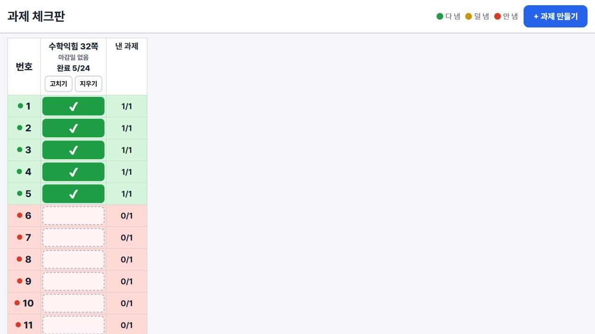

클로드 코드로 만드는
우리 반 웹앱
업무·학급운영·수업 도구를 Claude 데스크톱 앱의 Code 탭에서 대화로 만들고, 인터넷 주소로 나눕니다. 연수 중에도, 끝난 뒤에도 이 페이지를 보시면 됩니다.
00오늘의 흐름
| 시간 | 분 | 구성 | 하는 것 |
|---|---|---|---|
| 14:20 | 10 | 여는 시간 | 이 페이지 열기 |
| 14:30 | 10 | 01 클로드 코드 둘러보기 | Code 탭, 권한 모드, 미리보기 |
| 14:40 | 20 | 02 무엇을 만들까 · 업무 · 학급운영 · 수업 | 불편한 것 한 줄 적기 |
| 15:00 | 10 | 03 어떻게 만들까 · 요령과 레시피 | 레시피 하나 고르기 |
| 15:10 | 50 | 04 실습 · 만들고 주소로 나누기 | 내 웹앱 주소 하나 |
| 16:00 | 15 | 05 나눔 | 둘러보기 · 발표 |
| 16:15 | 5 | 마무리 |
연수 전에 해 둘 것
- Claude 데스크톱 앱에서 Code 탭이 열리는지. 안 열리면 start.choinssam.com을 위에서부터 따라 하시면 됩니다.
- Cloudflare 가입과 가입 메일 인증. dash.cloudflare.com/sign-up, 무료입니다. 만든 앱을 인터넷 주소로 올릴 때 씁니다. 메일 인증을 안 하면 배포가 멈출 수 있습니다.
01클로드 코드 둘러보기
지난 시간에 배운 Claude 데스크톱 앱의 세 번째 탭, Code에서 만듭니다.
질문, 글쓰기, 지난 차시의 프로젝트. 내 컴퓨터 파일은 못 만듭니다.
폴더 속 문서·자료 정리, 보고서나 표 같은 결과물.
폴더 안에 웹앱 파일을 만들고, 실행하고, 눌러 보고, 고칩니다. 오늘은 여기서.
Code 탭에서 알아 둘 여섯 곳
| 곳 | 하는 일 |
|---|---|
| 작업 폴더 | 환경 Local, Select folder로 빈 폴더를 고릅니다. 폴더 이름은 영어로(예: my-app), OneDrive 안은 피합니다 |
| + 단추 | 캡처·파일 첨부, 커넥터, / 명령 |
| 권한 모드 | 전송 단추 옆. 아래 표 |
| 모델 | Pro 기본 Opus 5.5, 생각 깊이 medium. 오늘은 그대로 |
| 미리보기 | 채팅에 나온 index.html을 누르거나 “미리보기로 열어 줘”. 만든 화면을 앱 안에서 바로 써 봅니다 |
| 바뀐 줄 | +12 −1 같은 표시를 누르면 무엇을 고쳤는지 보입니다 |
권한 모드
| 모드 | 하는 일 | 오늘 |
|---|---|---|
| Plan | 계획만 세웁니다. 파일은 건드리지 않습니다 | 첫 요청 |
| Accept edits | 파일 고치기는 묻지 않고, 명령 실행은 묻습니다 | 만들 때 |
| Manual | 고칠 때마다, 실행할 때마다 묻습니다. 처음 기본값 | 헷갈릴 때 |
| Auto | 안전한 일은 알아서, 위험해 보이는 일만 묻습니다 | 익숙해지면 |
앱 판에 따라 옛 이름(Ask permissions, Auto accept edits, Plan mode)으로 보일 수 있습니다. 근거: Claude Code 데스크톱 문서(2026-09-30 확인)
02무엇을 만들까
가장 먼저 물을 것: 무엇이 불편한가? 아래 도구는 모두 코드를 직접 쓰지 않고 대화로 만들었습니다.

과제 체크, 1인 1역, 학급 상점, 글똥마당, 건의함. “학생 데이터가 모이지 않네.”
체험판 열기 →
정보교육 주간 1~6학년. 퀴즈, 로봇 블록 코딩, 학교 코드와 QR.
열기 →
“달의 뒷면을 보고 싶은데…” 4학년 과학, 6학년 지구의 운동.
열기 →
“유료 구독 끝나서 아쉬워요!!” 수업방 코드로 작품 모으기.
열기 →
학생이 AI로 만든 HTML 게임을 반에서 올리고 함께 합니다(한뼘 안).

연수를 준비하며 만든 한 파일 앱. 오늘 실습에서 만들 크기가 이 정도입니다.
03어떻게 만들까
요청을 잘 쓰는 법보다, 맡기고 확인하고 고치는 법.
제가 실제로 쓰는 요령 여섯 가지
01 내 수준을 밝혀라
첫 줄에 “나는 코딩을 모르는 초등 교사야”라고 씁니다. AI가 전문 용어를 풀어 쓰고, 선생님이 직접 눌러야 할 것(가입, 허용 창)이 생기면 멈춰서 순서대로 알려 줍니다. 안 쓰면 영어 용어와 명령어가 설명 없이 쏟아집니다. 학년·교과까지 적으면 예시도 우리 교실에 맞춰 나옵니다.
나는 초등학교 [4]학년 담임이고 코딩을 몰라. 어려운 말은 풀어서 설명해 줘. 내가 결정해야 할 것은 충분히 이해할 수 있게 설명하고 선택지를 줘.
02 질문을 받아라
요청에 빈칸이 있으면 AI는 짐작으로 채웁니다. 만들기 전에 궁금한 것을 번호 목록으로 받고, 번호마다 한 줄씩 답합니다. 말로 답해도 됩니다. 안 하면 몇 학년인지, 몇 명인지 모른 채 만들어 다시 고쳐야 합니다.
만들기 전에 궁금한 것을 번호로 물어봐. 내가 번호 순서대로 답할게.
03 계획을 먼저 검토하라
Code 탭의 Plan 모드가 이 일을 합니다. 계획서에서 세 가지만 봅니다. 화면이 몇 개인지, 단추마다 무엇을 하는지, 기록을 어디에 저장하는지. 고칠 곳은 “다만 ~”으로 한 줄 더하고 승인합니다. 계획 먼저가 사용량도 아낍니다.
계획 좋아. 다만 [바꿀 점]은 이렇게 해 줘. 학생은 [전자칠판 / 태블릿]으로 써. 이대로 만들고, 다 만들면 미리보기로 열어 줘.
04 여러 가지 안을 먼저 받아라
디자인, 화면 배치, 앱 이름처럼 정답이 없는 것은 서로 다른 안을 3~5개 받습니다. 번호로 하나를 고르고 “2안 좋아. 다만 ~”으로 다듬습니다. 기능 목록처럼 정답이 있는 것은 한 안으로 충분합니다.
서로 다른 안을 [3]개 먼저 보여 줘. 내가 번호로 고를게.
05 예시를 제공하라
“깔끔하게”, “귀엽게”는 사람마다 다르게 읽습니다. 마음에 드는 사이트 주소, 화면 캡처, 전에 만든 내 앱을 본보기로 붙입니다. 캡처에 네모를 치고 “여기처럼”이라고 쓰면 긴 설명보다 정확합니다.
(캡처를 입력창에 끌어다 놓고) 네모 친 부분처럼 해 줘. 나머지는 그대로 둬.
06 참고할 자료를 지정하라
퀴즈나 과학 도구처럼 내용이 맞아야 하는 앱에 씁니다. 교과서 쪽수, 교육과정 원문, 공식 자료 파일을 작업 폴더에 넣고 “이 파일만 근거로”라고 씁니다. 자료에 없는 것은 지어내지 말고 물어보게 합니다.
폴더에 넣은 [교과서 파일]만 근거로 써. 없는 내용은 지어내지 말고 나한테 물어봐.
어디에나 쓰는 요청 틀
네 줄은 꼭 쓰고, 나머지는 필요할 때 한 줄씩. 무엇을 넣을지 막막하면 아래 레시피북에서 고르세요.
나는 [5학년 담임]이고 코딩은 몰라. [무엇]을 만들어 줘. [불편한 점] 때문에 필요해. [누가] [어디서] 써. 만들기 전에 궁금한 것을 번호로 묻고, 완성되면 어떤 모습일지 먼저 설명해 줘.
[캡처·링크]처럼 해 줘. 붙인 [자료]만 근거로 쓰고, 없는 건 지어내지 말고 물어봐. 학생 이름은 받지 않아. [바꾸면 안 되는 것]은 그대로 둬. 주제에 어울리는 서로 다른 안 [3]개를 먼저. 다 만들면 학생이 되어 써 보고, 막힌 곳은 개선해.
/goal · 목표를 주면 끝날 때까지
/goal 뒤에 끝나는 조건을 적으면, Claude가 조건을 채울 때까지 스스로 이어서 일합니다. 멈출 때는 /goal clear. Manual 모드는 계속 허락을 물으니 Auto와 함께 씁니다. 오늘 실습은 한 번씩 요청하고 확인하는 방식으로 하고, /goal은 익숙해진 뒤에 써 보세요. 근거: 공식 문서
/goal 발표 순서 뽑기 웹앱을 index.html 하나로 완성한다. 전자칠판에서 뒷자리까지 글씨가 보이고, 새로고침해도 순서가 남고, 휴대폰에서도 깨지지 않으면 끝.
R레시피북 · 골라서 조립하기
초인쌤 도구(한뼘, SW·AI 놀이터, 디드, 밤하늘 관찰, 실습 앱)를 기능 하나씩 나눈 요청문입니다. 작은 앱 하나(시작 레시피)로 시작해 기능 카드를 한 장씩 붙입니다. 두 장을 같이 붙이면 어디가 깨졌는지 알 수 없습니다.
레시피북.md 내려받기 · 작업 폴더에 넣고 “레시피북.md를 읽고 S1으로 시작해 줘”라고만 해도 됩니다.
조립기
1. 시작 레시피 하나
2. 이어 붙일 기능 카드 (고른 순서대로 하나씩)
시작 레시피
나는 초등학교 [4]학년 담임이고 코딩을 몰라. 어려운 말은 풀어서 설명해 줘. 만들기 전에 궁금한 것을 번호로 묻고, 화면과 기능 목록을 계획으로 먼저 보여 줘. 학생 이름은 받지 않고 번호로만 써. 학생 [24]명. 교실 전자칠판(가로 화면)과 학생 태블릿에서 써. 글씨와 단추는 크게. 처음 판은 index.html 한 파일로, 이 컴퓨터(브라우저)에 저장되게 만들어 줘.
S1과제 체크판 · 학급운영
원본: 한뼘 과제 체크판. 매일 누가 과제를 냈는지 한눈에.
[과제 체크판]을 만들어 줘. - 교사가 과제를 만든다: 제목, 마감일. 예) 수학익힘 32쪽, 받아쓰기 연습 - 표: 세로는 학생 번호 1~[24], 가로는 과제. 칸을 누르면 체크, 다시 누르면 해제 - 줄 색으로 신호등: 전부 냄 초록, 하나도 안 냄 빨강, 그 사이 노랑 - 과제 머리에 "완료 18/24"처럼 낸 인원을 보여 줘 - 모두 낸 과제는 접어서 숨길 수 있게
다음에 붙일 카드: A5 보상 씨앗 → A2 학생 로그인 → A3 교사 현황판
S21인 1역 체크 · 학급운영
원본: 한뼘 1인 1역. 역할을 매달 정하고, 학생이 매일 "했어요"를 누르고, 감독 학생이 확인.
[1인 1역 체크판]을 만들어 줘. - 역할 목록: 이름, 정원, 하는 일 한 줄. 예) 칠판 지우기 2명, 우유 당번 2명, 분리수거 감독 1명 - 교사가 이번 달 역할을 학생 번호에 배정한다. 지난달 배정을 그대로 복사하는 단추도 - 학생은 자기 번호를 누르고 "오늘 역할 했어요"를 누른다 - 달력처럼 이번 달을 한 장으로: 한 날 ○, 확인 기다림 △, 안 한 날 × - 교사는 월간 표로 전체를 본다
다음에 붙일 카드: A6 감독 확인 → A5 보상 씨앗(주급) → A1 반 전체 저장
S3학급 상점 · 학급운영
원본: 한뼘 학급 경제. 모은 씨앗으로 상품을 사고, 교사가 승인.
[학급 상점]을 만들어 줘. 화폐 이름은 [씨앗]. - 교사가 상품을 올린다: 이름, 값, 재고, 한 사람이 살 수 있는 개수 예) 자리 바꾸기권 50, 급식 먼저 먹기 30, 숙제 하루 면제 80 - 학생이 번호를 고르고 "사기"를 누르면 '승인 기다림'이 된다 - 교사가 승인하면 그때 씨앗이 빠진다. 거절하면 그대로 - 학생마다 남은 씨앗과 산 기록을 볼 수 있게 - 잔액 순위표는 만들지 마
다음에 붙일 카드: S1과 합치기(과제로 번 씨앗으로 사기) → A7 의견함(학생이 상품 제안)
S4독서 기록장 · 글똥누기 · 학급운영·국어
원본: 한뼘 글똥마당, 실습 앱 독서기록장.
[우리 반 독서 기록장]을 만들어 줘. - 학생이 쓴다: 날짜, 책 제목, 읽은 쪽수, 종류, 한두 줄 느낌 - 종류는 [기억에 남는 장면 / 재미있던 점 / 감동 / 교훈 / 궁금한 점 / 한 줄 평] - 제목과 느낌이 비면 저장하지 않는다 - 친구 글에 이모지 반응을 달 수 있다. 인기순 정렬은 하지 마 - 교사 화면: 학생별 이번 주 기록 수, 최근 30일에 한 권도 없는 학생 표시
다음에 붙일 카드: A12 AI 분석 요청문 복사 → A5 보상 씨앗 → A1 반 전체 저장
S5오늘의 마음 기록 · 학급운영
원본: 한뼘 기분, 실습 앱 마음기록.
[오늘의 마음 기록]을 만들어 줘. - 학생은 하루 한 번 마음 6개 중 하나를 고르고 이유를 한 줄 쓴다 마음: 기쁨, 설렘, 보통, 피곤, 속상함, 화남 - 같은 날 다시 쓰면 덮어쓴다 - 교사 화면: 학생별 최근 7일 마음을 이모지 줄로 - 최근 7일에 속상함·화남이 3일 이상이면 '살펴보기' 표시. 학생 화면에는 이 표시를 보이지 마 - 마음 기록에는 보상을 주지 마(꾸며 쓰지 않게)
다음에 붙일 카드: A2 학생 로그인 → A3 교사 현황판
S6정보 퀴즈 · 뉴스 탐정 · 정보수업
원본: SW·AI 놀이터 4학년 뉴스 탐정.
[뉴스 탐정 퀴즈]를 만들어 줘. 대상은 [4]학년 정보수업. - 카드 한 장에 글이나 광고가 나오고, 학생이 "누가, 왜 만든 정보일까?"를 고른다 - 문제는 [10]개. 보기는 3개 - 맞히면 콤보가 쌓이고, 틀리면 화면 바닥에 해설 창이 올라온다(화면을 밀지 않게) - 끝나면 별 3개로 결과를 보여 준다 - 문제 내용은 [붙인 자료 / 교과서 ○쪽]만 근거로 쓰고, 없는 건 지어내지 말고 물어봐
다음에 붙일 카드: A9 전자칠판 모드 → A11 재미 효과 → A4 방 코드(반별 참여 수)
S7로봇 블록 코딩 게임 · 정보수업
원본: SW·AI 놀이터 로봇 블록 코딩.
[로봇 블록 코딩 게임]을 만들어 줘. 대상은 [3]학년. - 격자 판 위에 로봇과 별이 있다. 학생은 블록(앞으로, 왼쪽 돌기, 오른쪽 돌기)을 끌어다 놓아 순서를 만든다 - 블록은 끌어다 놓기와 누르기 둘 다 되게. 태블릿 손가락으로도 - "실행"을 누르면 로봇이 한 칸씩 움직인다. 벽에 부딪히면 멈추고 어디서 틀렸는지 보여 준다 - 단계 [5]개. 뒤로 갈수록 '반복' 블록이 필요하게 - 블록 수가 너무 많으면 "더 짧게 할 수 있을까?"라고 알려 준다
다음에 붙일 카드: A10 태블릿 터치 점검 → A11 재미 효과 → A9 전자칠판 모드
S8우리 반 그림판 · 미술
원본: 디드 우리 반 디지털 드로잉.
[우리 반 그림판]을 만들어 줘. - 붓 크기 3가지, 색 12가지, 지우개, 되돌리기, 전체 지우기 - 태블릿 펜과 손가락으로 부드럽게 그려진다 - 도안 위에 칠하기: 선 그림을 불러와 그 위에 색칠(선은 지워지지 않게) - 그림은 이 기기에 3초마다 자동 저장되고, 다시 열면 이어 그린다 - 다 그리면 PNG로 내려받기
다음에 붙일 카드: A4 방 코드(작품을 교사 화면에 모으기) → A8 디자인 바꾸기
S9모둠 뽑기 · 업무·학급운영
원본: 반 배정 프로그램, 모둠 편성.
---
[모둠 뽑기]를 만들어 줘. - 학생 번호 1~[24], 모둠 수 [6] - 조건: 같은 모둠이면 안 되는 번호 쌍, 꼭 같이 있어야 하는 번호 쌍을 적을 수 있다 - "뽑기"를 누르면 조건을 지켜 나누고, 못 지킨 조건이 있으면 빨간 글씨로 알려 준다 - 결과는 모둠 카드로 크게. 카드끼리 번호를 끌어다 옮길 수 있다 - 결과를 인쇄하기
다음에 붙일 카드: A9 전자칠판 모드 → A12 결과 내보내기
기능 카드
카드는 “지금 되는 기능은 그대로 두고”로 시작합니다. 이미 된 것이 깨지지 않게 하는 한 줄입니다. 로그인(A2), 방 코드(A4)처럼 여러 기기의 기록을 모으는 기능은 반 전체 저장(A1)을 먼저 붙여야 제대로 됩니다.
A1반 전체 저장 (데이터베이스)
지금까지는 기기마다 따로 저장됩니다. 학생 태블릿에서 한 것이 교사 화면에 모이려면 이 카드가 필요합니다.
무료 한도: 하루 요청 10만 건, 데이터 쓰기 10만 줄, 저장 500MB. 한 반이 쓰기에 넉넉합니다.
지금 되는 기능은 그대로 두고, 저장을 반 전체가 같이 쓰는 데이터베이스로 옮겨 줘. Cloudflare Worker와 D1 데이터베이스를 써. 나는 Cloudflare 가입과 메일 인증을 해 두었어. 설치나 로그인이 필요하면 네가 하고, 내가 눌러야 하는 창만 순서대로 알려 줘. 학생 이름은 저장하지 말고 번호만. 다 되면 주소를 알려 줘.
A2학생 로그인 (번호 + 비밀번호 4자리)
원본: 한뼘, 실습 앱. 이름 대신 번호를 고르고 숫자 4자리.
로그인은 A1(반 전체 저장)이 있어야 제대로 됩니다. 한 파일 판에서는 흉내만 납니다.
지금 되는 기능은 그대로 두고, 학생 로그인을 붙여 줘. - 번호를 고르고 숫자 4자리 비밀번호를 넣는다. 처음 비밀번호는 교사가 정해 준다 - 비밀번호 확인은 서버에서 하고, 저장할 때는 알아볼 수 없게(해시) 저장 - 5번 틀리면 5분 동안 잠긴다 - 로그인한 학생은 자기 기록만 보고 고칠 수 있다
A3교사 화면 · 현황판
지금 되는 기능은 그대로 두고, 교사 화면을 붙여 줘. - 교사는 4자리 PIN으로 들어온다(학생 화면에는 보이지 않는 작은 단추) - 맨 위에 문장 한 줄: "오늘 안 한 학생 4명 · 살펴볼 학생 2명". 누르면 그 학생만 거른다 - 학생별 줄: 최근 기록, 최근 7일 추이 작은 그래프, 상태(했음 / 안 함 / 기록 없음 / 살펴보기) - 학생 화면에는 등수, 반 평균, 다른 학생 기록을 넣지 마
A4수업 방 코드 + QR
원본: SW·AI 놀이터 학교 코드, 디드 수업방.
지금 되는 기능은 그대로 두고, 수업 방 코드를 붙여 줘. - 교사가 "방 만들기"를 누르면 5자리 코드와 QR, 접속 주소가 나온다 - 학생은 주소에 코드가 들어 있는 QR을 찍거나 코드를 넣어 들어온다. 로그인은 없다 - 학생 기록은 그 방에만 모인다. 방마다 교사 보기 링크(열쇠)를 따로 준다 - 방은 [2시간 / 7일] 뒤 닫힌다
A5보상 씨앗 (포인트)
원본: 한뼘 씨앗 원장.
지금 되는 기능은 그대로 두고, 보상 [씨앗]을 붙여 줘. - [과제 체크] 한 번에 [10]씨앗. 마감이 지나면 하루에 10%씩 깎되 40% 아래로는 안 내려간다 - 체크를 풀면 준 씨앗도 되돌린다 - 잔액은 '기록'을 모두 더해서 계산해(언제, 얼마, 왜). 잔액 숫자를 따로 고치지 않게 - 교사는 여러 학생에게 한꺼번에 주거나 걷을 수 있다. 사유는 꼭 적는다 - 잔액 순위표는 만들지 마
A6감독 확인 (다른 학생이나 교사가 승인)
원본: 한뼘 1인 1역 감독.
지금 되는 기능은 그대로 두고, 감독 확인을 붙여 줘. - [분리수거 감독] 역할 학생은 다른 학생의 "했어요"를 확인하거나 반려한다 - 반려하면 인정 안 됨, 확인하면 인정. 감독이 아무것도 안 눌렀으면 자기 체크만으로 인정 - 지난 날을 깜빡했으면 "저 이 날 했어요" 요청을 보내고, 감독이 승인해야 인정된다 - 자기 자신은 감독할 수 없다
A7의견함 → 고치기 순환
원본: 한뼘 건의함, 밤하늘·SW 놀이터 의견 보내기. 학생 의견으로 앱이 계속 좋아집니다.
의견이 쌓이면 이렇게 고칩니다.
지금 되는 기능은 그대로 두고, 의견함을 붙여 줘. - 모든 화면 위쪽에 "의견 보내기" 단추. 종류: 고장났어요 / 이런 기능이 있으면 / 기타 - 이름 칸은 없다. 어느 화면에서 보냈는지는 자동으로 붙인다 - 교사 화면에 새 의견 수 배지. 교사가 회신을 적으면 학생 화면에 "답이 왔어요" - 욕설·장난 글은 지우지 말고 숨김 칸으로
의견함에 들어온 것을 모아서 고칠 목록으로 정리해 줘. 오류가 먼저, 기능 제안은 뒤에. 명백한 오류는 바로 고치고, 기능을 바꾸는 것은 나한테 먼저 물어봐. 고친 뒤에는 실제 주소에서 확인하고, 의견마다 회신 문장을 초등학생 눈높이로 써 줘.
A8디자인 바꾸기
원본: "디자인이 AI 슬롭 같다. 우와 소리 나게."
본보기가 있으면 한 줄 더합니다. [캡처 / 주소]처럼 해 줘.
기능은 그대로 두고 디자인만 바꾸고 싶어. 서로 다른 콘셉트 [3]개를 먼저 보여 줘. 콘셉트마다 이름, 색 3개, 글꼴, 어울리는 이유 한 줄. 흔한 모양(이모지 가득, 둥근 흰 카드, 보라색 그라데이션, 무지개 단추)은 피해 줘. [4]학년이 보고 "우와" 할 만하게. 내가 번호로 고르면 그걸로 바꿔.
A9전자칠판 모드
지금 되는 기능은 그대로 두고, 전자칠판 모드를 붙여 줘. - 전체 화면 단추. 뒷자리에서도 읽히게 글씨 크기 3단계 조절 - 해설이나 알림은 화면을 밀지 말고 바닥에 붙는 창으로 - 1920×1080에서 스크롤 없이 한 화면에 들어오게
A10태블릿 터치 점검
학생이 태블릿 손가락으로 쓴다고 생각하고 모든 단추를 눌러 봐. 단추는 손가락 크기(44px 이상)로, 끌어다 놓기는 손가락으로도 되게. 움직이며 나타나는 창의 단추는 손을 뗄 때 엉뚱한 곳이 눌리지 않는지 확인하고 고쳐 줘.
A11재미 효과
지금 되는 기능은 그대로 두고 재미를 더해 줘. 맞히면 짧은 효과음과 반짝임, 연속으로 맞히면 콤보, 끝나면 축하 화면. 소리 켜고 끄기 단추를 꼭 넣어 줘. 수업 중에 시끄럽지 않게 기본은 [꺼짐].
A12내보내기 · AI 분석 요청문
원본: 한뼘 글똥마당 월별 내보내기, 실습 앱 'AI에게 줄 텍스트 복사'.
지금 되는 기능은 그대로 두고, 교사 화면에 두 단추를 붙여 줘. - "엑셀로 내려받기": 학생 번호별 기록을 CSV로. 이름 칸은 없다 - "AI에게 줄 글 복사": 이번 달 기록과 함께 "학생별로 칭찬 한 줄, 다음 달 목표 한 줄을 써 줘"라는 요청문을 복사
A13개인정보 점검
지금 앱을 학생 개인정보 쪽에서 점검해 줘. 이름·전화번호·사진처럼 받지 않아도 되는 것을 받고 있는지, 다른 학생 기록이 보이는 곳이 있는지 찾아서 표로 보여 주고, 고칠 방법을 제안해 줘.
A14주소로 나누기 · 고친 판 다시 올리기
미리 해 둘 것: Cloudflare 가입(cloudflare.com, 무료)과 가입 메일 인증. 인증을 안 하면 배포가 멈출 수 있습니다.
고친 뒤에는 한 줄이면 됩니다.
Claude 커넥터 목록의 Cloudflare Developer Platform 은 데이터베이스(D1)를 만들고 들여다보는 데 씁니다.
배포하는 기능은 없어서, 배포는 위 요청처럼 Claude가 Cloudflare 명령 도구(wrangler)로 합니다.
가입 없이 급히 보여 줄 때는 cloudflare.com/drop 에 폴더를 끌어다 놓습니다(1시간 뒤 사라짐).
이 앱을 Cloudflare에 올려서 인터넷 주소를 만들어 줘. 나는 Cloudflare 가입과 메일 인증을 해 두었어. 필요한 프로그램(Node.js, wrangler)이 없으면 네가 설치하고, 로그인 창이 뜨면 내가 '허용'만 누르면 되게 알려 줘. 주소에 들어갈 이름은 영어 소문자로 [class-check]. 다 되면 주소를 알려 줘.
고친 것을 같은 주소에 다시 올려 줘. 올린 뒤 그 주소를 열어서 바뀐 게 보이는지 확인해 줘.
A15데이터를 대화로 보기 (커넥터)
Claude 설정 → 커넥터에서 Cloudflare Developer Platform 을 연결해 두면 Chat 탭에서도 반 데이터를 물어볼 수 있습니다.
---
Cloudflare D1의 [class-check] 데이터베이스에서 이번 주 과제를 하나도 안 낸 번호를 알려 줘. 읽기만 하고 아무것도 고치지 마.
실제로 돌려 봤습니다

04실습 · 만들고 주소로 나누기
| 분 | 단계 | 하는 것 |
|---|---|---|
| 5 | 준비 | 빈 폴더를 만들고 Code 탭에서 고릅니다. 모드는 Plan |
| 10 | 계획 | 레시피를 골라 [ ]를 바꿔 요청하고, 질문에 답하고, 계획을 읽습니다 |
| 15 | 만들기 | 계획을 승인하고, 미리보기로 써 봅니다 |
| 10 | 고치기 | 짝이 써 보고, 캡처로 고칠 곳을 알려 줍니다 |
| 10 | 나누기 | Claude에게 Cloudflare 배포를 맡기고, 주소를 패들렛에 올립니다 |
고칠 때 자주 쓰는 말
(캡처에 네모를 치고 끌어다 놓고) 네모 친 부분이 교실 뒤에서 안 보여. 글씨를 크게 하고 나머지는 그대로 둬.
짝이 [여기]서 멈췄어. 더 쉽게 고쳐 줘.
(오류 문구나 화면을 그대로 붙이고) 원인을 찾아 고치고 다시 확인해 줘.
방금 바꾼 것을 되돌려 줘.
주소로 나누기 · Claude에게 배포를 맡깁니다
이 앱을 Cloudflare에 올려서 인터넷 주소를 만들어 줘. 나는 Cloudflare 가입과 메일 인증을 해 두었어. 필요한 프로그램이 없으면 네가 설치하고, 로그인 창이 뜨면 내가 ‘허용’만 누르면 되게 알려 줘. 주소에 들어갈 이름은 영어 소문자로 [class-check].
고친 것을 같은 주소에 다시 올려 줘. 올린 뒤 그 주소를 열어서 바뀐 게 보이는지 확인해 줘.
| 언제 | 무엇 | 누가 |
|---|---|---|
| 미리 | Cloudflare 가입 · 메일 인증 | 선생님 |
| 처음 한 번 | Node.js, wrangler(Cloudflare 명령 도구) 설치 | Claude |
| 처음 한 번 | 브라우저 로그인 창에서 Allow | 선생님 |
| 반 전체 저장(A1)을 붙였다면 | 데이터베이스(D1) 만들기 | Claude |
| 매번 | 배포, ○○.workers.dev 주소 | Claude |
가입 없이 급히 보여 줄 때는 cloudflare.com/drop에 폴더를 끌어다 놓으면 바로 주소가 나옵니다. 1시간 뒤 사라지고, 남기려면 Claim.
배포가 막히면
| 증상 | 해 볼 것 |
|---|---|
| 로그인 창이 안 뜬다 | “로그인 주소를 링크로 보여 줘” |
| verify your email | 가입 메일함에서 인증 누르고 “다시 올려 줘” |
| 이름이 이미 있다 | “이름 뒤에 숫자를 붙여서 다시” |
| 주소를 열면 빈 화면 | “주소를 열어 보고 왜 비었는지 찾아서 고쳐 줘” |
| 학교 인터넷에서 막힌다 | 휴대폰 핫스폿, 또는 Drop으로 우선 보여 주기 |
+어디에 올리고, 어디에 모을까
코드는 AI가 짭니다. 선생님이 정할 것은 두 가지입니다. 어디에 올려 주소를 받을지(호스팅), 학생 기록을 어디에 모을지(데이터베이스).
GitHub Pages, Cloudflare, Netlify, Vercel, Firebase Hosting
구글 시트, Cloudflare D1, Firebase Firestore, Supabase
이렇게 고릅니다
| 우리 앱은 | 고를 곳 | 초인쌤 사례 |
|---|---|---|
| 저장할 기록이 없다 시뮬레이터, 퀴즈, 안내 페이지 | GitHub Pages 또는 Cloudflare(정적 파일) | 밤하늘 관찰(GitHub Pages) |
| 기록을 모아 교사만 본다 의견함, 설문, 체크 | 구글 시트(Apps Script) | 밤하늘 의견 받기, 연수 실습 앱 |
| 여러 반·여러 학교가 익명으로 쓴다 | Cloudflare Workers + D1 | SW·AI 놀이터, 디드 |
| 학생 로그인, 실시간, 기록이 많다 | Firebase 또는 Supabase | 한뼘(Firebase) |
오늘 실습은 Cloudflare로 합니다. 기록이 없는 앱도, 나중에 반 전체 저장(A1)을 붙인 앱도 같은 곳에서 이어 갈 수 있고, 한도를 넘어도 요금이 나가지 않고 그날만 멈춥니다.
무료로 쓸 때 알아 둘 것
| 서비스 | 무엇 | 무료 한도(반 앱에 걸리는 것) | 넘으면 · 주의 |
|---|---|---|---|
| GitHub Pages | 정적 파일만. 서버·DB·로그인 없음 | 사이트 1GB, 전송 월 100GB | 약관상 온라인 사업·SaaS·비밀번호 처리 금지 |
| Cloudflare Workers + D1 | 정적 파일, 서버 코드, DB를 한곳에 | 요청 하루 10만(정적 파일 요청은 안 셈), D1 쓰기 하루 10만 줄·읽기 500만 줄, DB 500MB | 그날 그 작업만 오류, 한국 시각 오전 9시에 풀림. 요청당 계산 10ms 제한 |
| 구글 시트 Apps Script | 구글 계정만 있으면 웹앱 + 시트 | 실행 1회 6분, 동시 실행 30개, 시트 셀 1,000만 개 | 한 반이 한꺼번에 제출하면 몇 명 실패할 수 있음(추정) |
| Firebase (Spark) | 호스팅, Firestore, 로그인 | Firestore 하루 읽기 5만·쓰기 2만, 저장 1GB, 서울 리전 | 그 제품이 그 달 남은 기간 멈춤. 서버 함수(Functions)는 카드 등록 요금제에서만 |
| Supabase | Postgres DB, 로그인 | DB 500MB, 프로젝트 2개, 서울 리전 | 1주일 안 쓰면 프로젝트가 멈춤(방학 뒤 다시 켜기) |
| Netlify | 정적 사이트, 함수 | 월 300크레딧. 배포 1회 15, 전송 1GB 20 | 다 쓰면 계정의 모든 사이트가 멈춤. 자주 고쳐 올리는 바이브 코딩에서 금방 참 |
| Vercel | 정적 사이트, 함수 | 전송 월 100GB, 함수 호출 100만 | 무료(Hobby)는 비상업 개인 용도만. 넘으면 대개 30일 대기 |
2026년 9월 30일 공식 요금·한도 페이지 기준: GitHub Pages · Workers · D1 · Apps Script · Firebase · Supabase · Netlify · Vercel. 한도는 자주 바뀝니다.
고르기 어려우면 Claude에게
이 앱을 반 학생 [24]명이 [매일] 쓸 거야. 기록은 [교사만 / 학생 본인도] 봐. 무료로 오래 쓰려면 호스팅과 데이터베이스를 어디로 하면 좋을지, GitHub Pages, Cloudflare, 구글 시트, Firebase 중에서 골라 이유를 초등 교사가 알아듣게 설명해 줘. 무료 한도를 넘으면 어떻게 되는지도 알려 줘.
마무리학생이 직접 쓰는 도구라면
초·중등교육법 제29조의2 제2항(2026. 3. 1. 시행)에 따라 학생 개인정보를 처리하거나 교과 학습 콘텐츠를 담은 소프트웨어는 학교운영위원회 심의 대상이 될 수 있습니다. 부담 없이 시작하려면 개인정보를 받지 않는 도구로, 번호로 만듭니다. 학교마다 판단이 다를 수 있으니 담당 부서와 먼저 확인합니다.
더 보기
- choinssam.com · 수업 웹앱, 책, 책 자료실, 영상 강의, 연수 자료
- 클로드 코드 시작하기 · 설치부터 첫 대화까지
- Claude Code 데스크톱 공식 문서